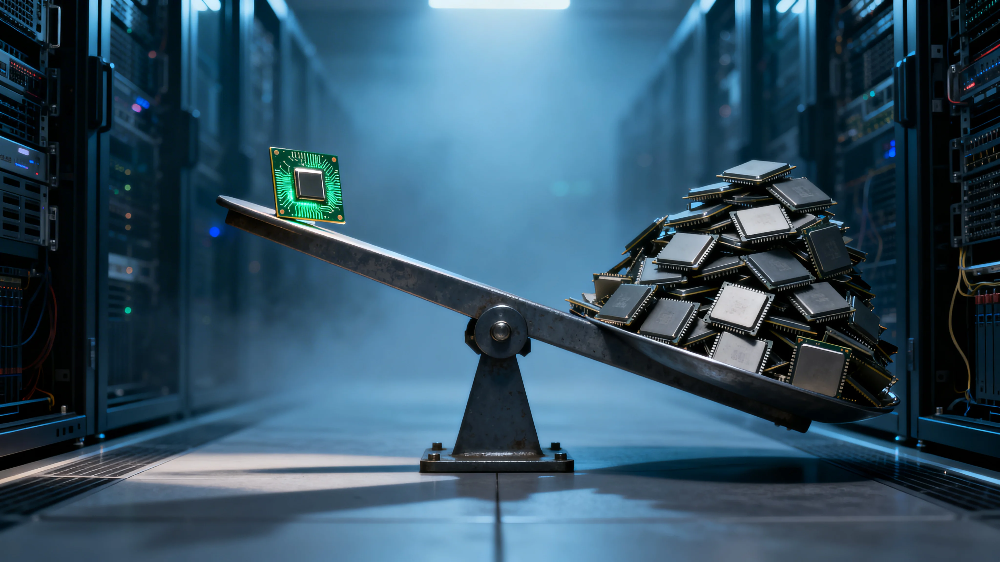

In April 2025, a team at Together AI and Agentica tried to teach a 14-billion-parameter model to write better code. The method: generate candidate solutions, run them against unit tests, reward the ones that pass. Reinforcement learning from verifiable rewards — RLVR. The model ran on 32 Nvidia H100 GPUs. The GPUs were not the bottleneck.
The bottleneck was the CPUs. Every training step required the model to generate 16 candidate solutions per problem, then execute each in a sandboxed environment against 5 or more unit tests. At training scale — a thousand problems per iteration — that meant over sixteen thousand separate code executions per step, each requiring execution, output comparison, and cleanup. Together AI had to build a custom verification service capable of processing over 1,000 code executions per minute across 100 concurrent sandboxes.[1] The verification layer, not the generation layer, determined how fast the model could learn.
This is the pattern the industry hasn’t named yet. GPU compute for AI generation scales linearly and benefits from every hardware generation Nvidia ships. CPU compute for AI verification scales superlinearly but resists acceleration. The workload is an arbitrary program execution that requires operating system services, file system access, and process isolation, which GPU architectures do not provide.[2] As AI shifts from “generate” to “generate and verify,” the verification layer becomes the bottleneck on how fast models improve through reinforcement learning. The Verification Tax is the CPU-side cost multiplier that grows with every increase in RL training ambition — more completions per prompt, more complex verification, longer execution times — and it compounds in ways the GPU scaling curves do not capture.
The CPU’s role in AI datacenters is not shrinking. It is differentiating into three distinct jobs — feeding GPUs, verifying RL outputs, and running inference for smaller models — and all three are growing simultaneously. The most consequential of the three is verification, because it creates genuinely new demand that cannot be served by the hardware the industry spent the last three years stockpiling.
Three jobs the GPU narrative erased
The feeder
Every GPU training run depends on CPUs for data loading, preprocessing, tokenization, and batch assembly. When the CPU cannot keep pace, GPUs idle. Nvidia’s own documentation acknowledges that dense multi-GPU systems “train models much faster than data can be provided by the input pipeline, leaving GPUs starved for data.”[3]
The industry’s response has been to throw more cores at the problem. In the DGX-2 (2018), each V100 GPU had roughly 3 CPU cores. In the DGX A100 (2020), sixteen. The GB300 NVL72 — Nvidia’s current flagship — deploys thirty-six Grace ARM cores per Blackwell Ultra GPU, connected via NVLink-C2C — Nvidia’s chip-to-chip coherent link — at 900 GB/s, a twelve-fold increase in cores-per-GPU from the DGX-2 era.[4] At hyperscale, this investment has worked: Meta’s 54-day Llama 3 405B training run on 16,384 H100 GPUs recorded 419 unexpected interruptions, but only two were CPU failures: the binding constraint was storage throughput, not CPU compute.[5]
The feeder role is being architecturally resolved. The verification role is not.
The verifier
Reinforcement learning from verifiable rewards — the method behind DeepSeek-R1's reasoning capabilities, DeepCoder's coding performance, and an increasing share of frontier model post-training — works in three steps. First, the model generates candidate answers on GPU. Second, each answer is tested for correctness on CPU: run the code, check the math, compare the output. Third, the results feed back to the model as a training signal: reinforce what worked, penalize what didn't. Generation dominates wall-clock time, though pipelining increasingly overlaps it with verification.[6]
The majority of RLHF for general instruction following still uses learned reward models that run entirely on GPU, adding VRAM pressure but no CPU verification cost. Constitutional AI, RLAIF, and reward model ensembles — the dominant approach at Anthropic, Google, and OpenAI for non-code tasks — are GPU-on-GPU pipelines.[7] The Verification Tax applies where correctness is checked by execution, not by a model.
For math RL — the dominant form in DeepSeek-R1’s primary training — verification is trivially cheap: extracting a numerical answer and comparing to ground truth costs under a millisecond on any CPU. Format compliance via regex is similarly lightweight. The Verification Tax is negligible for these workloads. But code verification — executing generated programs in sandboxed environments against unit test suites — costs one to ten seconds per execution, a thousand to ten thousand times more expensive per check.[8] For agentic verification, the cost compounds further: each check may require loading test fixtures, spinning up mock APIs, populating environment state, and comparing final outcomes — a setup that can exceed the execution time itself. Multi-step agent tasks requiring environment interaction can take minutes. The tax is workload-dependent, and the workloads where it is highest are exactly the workloads the industry is scaling toward: code generation, agent training, and tool use.
GRPO — Group Relative Policy Optimization, the algorithm that powered DeepSeek-R1 — amplifies CPU demand through group sampling.[9] For each prompt, GRPO generates ‘G’ candidate completions, typically four to sixteen, with well-funded labs pushing to sixty-four. Rewards are normalized within each group. At G=8 — a common configuration for cost-constrained code RL — a training step with 1,024 prompts requires 8,192 separate verifications. For code RL with five unit tests per problem, that becomes approximately 41,000 test executions per step. At G=16, the number doubles to 82,000. With ten-second execution timeouts, completing this within a reasonable window demands hundreds of concurrent CPU cores running sandboxed environments — each consuming 500 MB to 2 GB of RAM for its isolated process, loaded dependencies, and test fixtures.[10]
The DeepCoder training run is the best-documented example at scale. Together AI trained a 14B model on 32 H100 GPUs for two and a half weeks using GRPO+. Each RL iteration verified over a thousand coding problems, each against multiple unit tests, requiring the custom Together Code Interpreter to run more than 100 concurrent sandboxes at over 1,000 executions per minute.[11] Two leading open-source RL training frameworks — ByteDance’s veRL and Hugging Face’s TRL — confirm the pattern: veRL’s documentation shows that allocating greater CPU resources for concurrent code verification reduces the reward computation stage by 10–30%, and TRL’s GRPOTrainer delegates verification entirely to user-provided reward functions, leaving the verification infrastructure as a gap the user must fill.[12]
The verification layer can also be decoupled from the training cluster and scaled independently on commodity compute. Together AI’s TCI service is exactly this — a separate verification endpoint. In theory, the approximately 87% of cloud CPU capacity that sits idle on average could absorb verification workloads at near-zero marginal cost.[13] In practice, large RL training runs operate in dedicated datacenter clusters where idle general-purpose cloud instances are not co-located, and the latency penalty of routing verification through distant commodity compute degrades RL training efficiency. veRL’s architecture interleaves reward computation with sampling for precisely this reason: the tighter the generation-verification loop, the faster training converges.[14] The decoupled approach works, but at a cost to convergence speed, and speed is what frontier labs compete on.
The structural problem: GPU compute for generation scales roughly linearly with model size and output length. CPU compute for verification scales with the product of completions × tests × execution time. As models improve, they write more complex code, which requires longer execution times. As training matures, more diverse test suites are needed to prevent reward hacking. Models learn to exploit weak test suites — writing code that passes the tests without solving the problem. The response is more tests, more edge cases, more adversarial inputs. That arms race directly increases verification cost. The result is a superlinear CPU scaling requirement that increases with the ambition of RL training, and no hardware accelerator addresses it.
Jensen Huang named the consequence on Nvidia’s most recent earnings call: “The number of tokens that are being generated has really, really gone exponential, and so we need to inference at a much higher speed.”[15] Dion Harris, Nvidia’s head of AI infrastructure, was more specific at GTC 2026: “CPUs are becoming the bottleneck in terms of growing out this AI and agentic workflow.”[16] Nvidia anticipated this: Grace shipped in 2023 as a GPU companion, and the March 2026 launch of Vera — marketed as the first CPU “purpose-built for agentic AI” — positions Nvidia as the only vendor selling both the generation silicon and the verification silicon in the same rack. Bank of America projects the datacenter CPU market could more than double, from $27 billion in 2025 to $60 billion by 2030 — driven substantially by AI inference and verification demand.[17]
The inference engine
The third CPU job is the one vendors talk about most and practitioners deploy least: running LLM inference directly on CPUs without a GPU.
The economics are real but bounded. For quantized models with fewer than 7 billion parameters on existing infrastructure, where CPU cycles are essentially free at the margin, CPU inference is often the cheapest option. Intel’s Xeon processors with AMX (Advanced Matrix Extensions) can run quantized Llama 3.2 3B at up to 57 tokens per second — double the throughput without AMX.[18] AMD’s PACE framework with speculative decoding achieves approximately 380 tokens per second on Llama 3.1 8B using EPYC 9575F processors, per AMD’s published benchmarks.[19] ARM-based servers are competitive: AWS Graviton instances running llama.cpp show up to four times the performance of x86 alternatives in favorable configurations.[20]
The validation that matters came in February 2026, when Meta became the first hyperscaler to deploy Nvidia Grace CPUs as standalone processors at scale — without GPU companions — for agentic AI workloads.[21] Nvidia’s Ian Buck confirmed that Grace delivers “2x the performance per watt on those backend workloads” in Meta’s datacenters.[22] The deployment targets workloads that are memory-bandwidth-intensive rather than compute-intensive: agent orchestration, tool calling, context management, and sequential reasoning chains that waste GPU parallelism.
The boundary is clear. With roughly 7 billion parameters, CPU inference is cost-effective on existing infrastructure. For up to 20 billion, the economics depend on utilization and latency requirements.[23] Above thirty billion, CPUs cannot deliver acceptable latency for interactive use cases. AMD’s own benchmarks show a 70-billion-parameter model producing first-token latency of 76 seconds for 32 concurrent requests on EPYC 9965 — functional for offline processing, not for a chatbot.[24]
The harder constraint is software, not silicon. Red Hat has stated explicitly that vLLM “is not intended for CPU-based inference and has not been optimized for CPU performance.”[25] Intel and AMD are contributing CPU backends — Intel through SGLang with native AMX support, AMD through ZenDNN — but production maturity lags GPU serving stacks by years. The most advanced CPU inference stack in existence, Apple’s Metal and MLX framework, is highly optimized for Apple Silicon — and unavailable in the datacenter. The hardware is arriving faster than the software to run it.
The Verification Tax
A lab training a coding model with GRPO runs 1,024 problems per iteration at G=8, with 5 tests per run. That is roughly 41,000 sandbox executions per training step. At ten seconds per execution, the verification workload is 114 CPU-hours per step — hundreds of thousands of CPU-hours across a training run of several thousand steps. Scale to G=16 and the numbers double. The GPU cluster generating those completions may be 32 H100s; the CPU cluster verifying them needs hundreds of cores running continuously.
Now increase the ambition. Double the batch size. Move from math verification (under one millisecond per check) to code verification (one to ten seconds). Raise G from 4 to 16.
Moving from math RL to code RL with larger batches can increase CPU verification demand by a factor of 20,000 to 80,000, while GPU demand for the generation phase increases only eightfold.[26]
The GPU-to-CPU compute ratio inverts.
The tax compounds along three dimensions that each grow with training ambition. Completions per prompt (G in GRPO): increasing G from 4 to 16 to 64 improves the reward signal quality but linearly multiplies CPU verification demand.[27] Verification complexity per completion: the cost gap between math checking and code execution spans orders of magnitude; agent verification adds another. Batch scale: every additional prompt multiplies verification demand by G.
This is why the Verification Tax matters for infrastructure planning. A CTO designing an RL training cluster who provisions CPUs based on supervised training ratios will discover, mid-training, that verification is the pacing constraint. The GPUs will generate completions faster than the CPUs can verify them. Training will slow to the speed of the verification layer — not because the GPUs are expensive, but because the CPUs were free and nobody budgeted for them. The required CPU-to-GPU core ratio depends on verification complexity: math RL needs no more than the supervised training ratio, while code RL at G=16 can require an order of magnitude more CPU cores than the GPU cluster has.
Who benefits from the demand shift?
Intel’s accidental position
Intel’s AI accelerator strategy is a graveyard. Ponte Vecchio struggled. Rialto Bridge was shelved. Falcon Shores was demoted to an internal test chip in January 2025.[28] Gaudi 3 missed its revenue targets. Intel’s interim co-CEO Michelle Johnston Holthaus conceded: “We’re not yet participating in the cloud-based AI data center market in a meaningful way.”[29]
This leaves Xeon as Intel's de facto AI product — an Infrastructure Reversion by default rather than design.[30] Intel's strategic pivot reflects the recognition. In February 2026, the company announced a multi-year collaboration with SambaNova, backed by approximately $50 million in investment from Intel Capital. The deal positions Xeon as the CPU foundation for heterogeneous inference paired with SambaNova's RDU accelerators.[31] Intel is the only CPU vendor submitting standalone CPU results to MLPerf Inference benchmarks, and Xeon 6 has been selected as the host CPU for Nvidia's next-generation DGX Rubin NVL8.[32]
The irony is that the Verification Tax creates exactly the demand profile Intel’s remaining asset can serve. RL verification requires high core counts, large memory, and general-purpose compute — precisely what Xeon does. Intel’s upcoming Clearwater Forest (288 E-cores, Intel 18A, H1 2026) and Diamond Rapids (up to 192 P-cores, H2 2026) are positioned for the density and single-thread performance, respectively, that verification workloads demand.[33] Intel did not plan for this to be its primary AI opportunity. Diamond Rapids includes AI-specific features, but the CPU was never the flagship bet. The market arrived anyway. Whether Intel can convert volume demand into margin improvement is a different question: Xeon carries lower margins than accelerators would have, and AMD and ARM are eroding Intel’s share of the CPU market that the Verification Tax is expanding.
AMD and ARM are eating from both sides
AMD’s datacenter share is accelerating. Mercury Research data shows AMD reaching approximately 35.5% of x86 server revenue by Q4 2024, with supply chain estimates suggesting it may approach 40% by early 2025.[34] Datacenter revenue hit $3.7 billion in Q1 2025, up 57% year-over-year.[35] AMD’s dual strategy — EPYC for inference on models with fewer than 20 billion parameters, Instinct GPUs for larger models — is coherent and gaining traction. EPYC Turin’s 192 cores, 12 DDR5 channels, and 160 PCIe Gen5 lanes give it a raw density advantage over Intel for both the feeder role and CPU inference.[36]
ARM is expanding from approximately 15% of datacenter CPUs at the end of 2024 toward an ambitious 50% target.[37] Nvidia’s Grace CPUs dominate the GPU-companion role — both the GB200 and GB300 NVL72 racks are all-Grace platforms — and Meta’s standalone deployment validates Grace for inference and agentic workloads independent of GPUs.[38] In March 2026, ARM launched its first silicon product, the AGI CPU, co-designed with Meta: 136 Neoverse V3 cores that claimed 2x the performance per rack versus x86.[39] SoftBank’s $6.5 billion acquisition of Ampere Computing — which absorbed approximately 1,500 employees, the majority in chip design — further consolidated ARM’s datacenter position.[40]
On paper, SoftBank now owns the instruction set (ARM), the leading independent server CPU designer (Ampere), and an AI accelerator design team (Graphcore) — a vertically integrated silicon stack that parallels Nvidia’s Grace-to-Blackwell integration from the CPU side. Whether SoftBank can execute on integration remains unproven; its track record with semiconductor acquisitions is mixed at best, and Graphcore generated $4 million in revenue the year before SoftBank bought it.[40]
Oracle’s exit tells you where the puck isn’t
Oracle sold its 32.27% stake in Ampere to SoftBank in November 2025, booking a $2.7 billion pre-tax gain.[41] Larry Ellison framed the exit as “chip neutrality” — Oracle would deploy whatever silicon customers wanted, rather than building its own.[42] The reversal was strikingly rapid: as recently as September 2024, Oracle had disclosed options that could have given it majority control of Ampere by 2027.[43]
The catalyst was Stargate. Oracle is deploying over 450,000 Nvidia GB200 GPUs at its flagship Abilene campus and has committed to over $300 billion in additional AI infrastructure capacity.[44] At this scale, owning an ARM CPU company introduces perceived bias. Oracle chose agility over integration — the opposite of Amazon (Graviton), Google (Axion), and Microsoft (Cobalt), all of which design custom ARM server CPUs in-house. Amazon’s Jassy disclosed this week that its custom chip business — Graviton, Trainium, Nitro — generates over $20 billion annually and may be sold externally, validating the integration strategy Oracle rejected.[45]
Oracle has not stopped using Ampere chips — it launched A4 instances on AmpereOne M processors in October 2025, claiming 30% better price-performance than AMD EPYC-based alternatives.[46] But under chip neutrality, Ampere is one vendor among many, and Oracle’s long-term commitment to future Ampere generations remains unstated. The structural signal is that Oracle concluded it could capture more value as a neutral infrastructure provider riding Nvidia’s GPU wave than as a chip company competing on CPU design.
The sovereignty gap
The Verification Tax creates CPU demand that someone has to supply. In the West, the competition is between AMD, Intel, and ARM. Outside the West, the question is whether domestic silicon can serve even a fraction of the demand.
Europe’s answer is: not yet. Over €100 billion is committed across the EU Chips Act and IPCEI programs, but the gap between funding and fielded AI silicon remains wide.[47] SiPearl’s Rhea1, the flagship of the European Processor Initiative, taped out in July 2025 — with Neoverse V1 cores on a 6nm process that will be two to three generations behind market leaders by the time it ships.[48] Its first deployment, in the JUPITER exascale system at Jülich, will deliver roughly 5 petaFLOPS across 23,536 Nvidia H200 GPUs.[49] The sovereignty showcase runs on American silicon. Europe’s longer-term RISC-V initiatives target 2028–2030 at the earliest.[50]
China is moving faster. Huawei’s Ascend 910C delivers approximately 60–80% of Nvidia H100 performance on FP16 training benchmarks, per industry analyst estimates, with a production target of 600,000 units in 2026.[51] Cambricon reported revenue of RMB 4.6 billion ($630 million) for the first three quarters of 2025, with year-over-year growth in the first half exceeding 4,000% from a near-zero base in 2024.[52] But these are GPU-class accelerators, not CPUs. On the CPU side, Alibaba’s XuanTie C950 RISC-V server chip — announced March 2026, with a built-in tensor processing engine — reaches roughly Apple M1 (2020) performance levels.[53] RISC-V’s strategic appeal lies in its architectural independence from both x86 licensing and SoftBank’s ownership of ARM. The difference between Europe and China is not ambition — it is that China is shipping silicon while Europe is funding research programs.
Neither ecosystem can yet serve the Verification Tax at scale. The workload is general-purpose CPU execution, which means it runs on whatever CPUs are available — but running it well requires the core density, memory bandwidth, and single-thread performance that only AMD EPYC, Intel Xeon, Nvidia Grace, and ARM’s newest server cores deliver competitively. The sovereignty gap in CPUs is smaller than in GPUs, but it exists.
What would have to break
The Verification Tax thesis breaks down under three conditions.
GPU-native sandboxing becomes viable.If a vendor develops efficient execution of arbitrary programs — with OS services, process isolation, and file system access — on GPU hardware, the verification workload could move to the same silicon that handles generation. This would require GPUs to acquire capabilities they were explicitly designed to lack. Probability: low in the next three years. Not impossible at longer horizons.
RL shifts entirely to reward-model verification.If learned reward models running on GPU produce better training signal than verifiable rewards running on CPU, the tax shrinks to near zero. The evidence runs the other way: DeepSeek-R1, DeepCoder, and multiple frontier labs have demonstrated that verifiable rewards produce stronger reasoning capabilities for domains where verification is possible.[54] The trend is toward more verifiable reward, not less.
Verification workloads stay confined to code and math.If RL-based post-training remains limited to coding and mathematical reasoning, the Verification Tax affects a significant but bounded workload category. But agentic AI — models that browse the web, call tools, manage files, and interact with environments — requires verification that is even more CPU-intensive than code execution. Meta’s acquisition of Manus, which operates containerized virtual machines where parallel agents write code, debug it, and browse the web autonomously, is a demand signal for exactly the CPU-intensive verification infrastructure the Verification Tax predicts.[55] The workload category is expanding, not contracting.
The architectural implication is the three-phase compute pipeline — a disaggregation that the industry has not yet formally recognized. Phase one is generation: prefill and autoregressive decoding on GPU or specialized silicon, already being split by the AWS-Cerebras partnership. Phase two is optimization: gradient computation and GPU-weight updates, well-understood and heavily optimized. Phase three is verification: executing candidate outputs against ground truth in sandboxed environments, on CPU. The first two phases have dedicated hardware, mature software stacks, and billion-dollar investment. Phase three runs on commodity CPUs with no dedicated infrastructure. Companies that treat verification as a first-class infrastructure problem — purpose-built, separately scaled, independently optimized — will set the efficiency frontier for the next phase of RL-driven model improvement.
The CPU never left. It was doing the part of AI that nobody talks about at earnings calls — the part where you check if the answer is right.
Notes
[1] Together AI, “DeepCoder: A Fully Open-Source 14B Coder at O3-mini Level,” April 2025. “We’ve been working on reliably scaling the Together Code Interpreter to 100+ concurrent sandboxes and 1k+ sandbox executions per minute.”together.ai
[2] GPU architectures are optimized for massively parallel matrix operations with thousands of simple cores sharing a SIMT execution model. General-purpose program execution — spawning processes, accessing file systems, managing memory isolation, handling I/O — requires operating system services that GPU execution environments do not provide. Research into GPU-accelerated containers exists but does not address the full sandboxing requirements of code verification (process isolation, timeout management, output capture, resource limits). The primary bottleneck in sandboxed verification is execution time, not sandbox startup: lightweight container runtimes (Firecracker microVMs, gVisor) have reduced per-sandbox overhead to milliseconds, but the code itself still takes seconds to run.
[3] Nvidia, “Rapid Data Pre-Processing with NVIDIA DALI,” Nvidia Developer Blog.developer.nvidia.com
[4] CPU-per-GPU ratios: DGX-2 (2×Xeon Platinum 8168, 48 cores / 16 GPUs ≈ 3 cores/GPU); DGX A100 (2×AMD EPYC 7742, 128 cores / 8 GPUs = 16 cores/GPU); GB200/GB300 NVL72 (36 Grace CPUs × 72 cores / 72 GPUs = 36 cores/GPU — identical ratio across both generations). NVLink-C2C provides 900 GB/s of bidirectional bandwidth between the Grace CPU and the Blackwell GPU — roughly 7× PCIe Gen5 (128 GB/s per x16 slot). Vision and multimodal training remain more CPU-intensive due to on-the-fly image decoding and augmentation; Nvidia’s DALI library offloads some of this to GPU, yielding up to 72% faster ResNet-18 training vs. native PyTorch DataLoader per AWS benchmarks.nvidia.com
[5] Meta, “Building Meta’s GenAI Infrastructure,” Meta Engineering Blog, March 2024. 419 interruptions over 54 days; 2 CPU hardware failures (0.5%); GPU issues accounted for 58.7%.engineering.fb.com
[6] Together AI, “A practitioner’s guide to testing and running large GPU clusters for training generative AI models.” The 80–90% figure is consistent with the veRL documentation, which shows sampling as the primary bottleneck in GRPO training loops.together.ai
[7] The distinction between “verification by execution” (CPU-bound) and “verification by model judgment” (GPU-bound) is critical for infrastructure planning. Constitutional AI (Anthropic), RLAIF (Google), and reward model ensembles use learned models to score outputs — these run on GPU and incur no Verification Tax. RLVR and GRPO with code/math verification execute programs or compare answers — these are CPU-bound. Most general-purpose instruction following still uses the former; math, code, and agentic post-training increasingly use the latter.
[8] Execution time ranges are based on LiveCodeBench evaluation methodology and Together Code Interpreter documentation. Typical competitive programming problems take 1–5 seconds; complex system-level tasks can take 10+ seconds. The 1,000×–10,000× range reflects the gap between sub-millisecond math checking and 1–10 second code execution — the specific multiplier depends on program complexity and test suite depth. For compiled languages like Rust or C++, the compilation step alone can take 5–30 seconds, often exceeding execution time; Python-heavy benchmarks like LiveCodeBench avoid this cost because Python is interpreted.
[9] DeepSeek-AI, “DeepSeek-R1: Incentivizing Reasoning Capability in LLMs via Reinforcement Learning,” January 2025. GRPO generates G completions per prompt and normalizes rewards within each group, eliminating the need for a separate critic model.arxiv.org
[10] Memory footprint per sandbox: a Python process with typical ML test dependencies (NumPy, PyTorch, standard library) consumes 500 MB–2 GB of RAM in isolation. With 100+ concurrent sandboxes, verification nodes need 50–200 GB of RAM dedicated solely to sandbox processes, in addition to memory for the orchestration layer. This makes verification nodes memory-hungry in addition to core-hungry — a constraint the piece’s infrastructure planning advice should account for.
[11] Together AI, “DeepCoder,” op. cit. 32 H100 GPUs, 2.5 weeks training, 24K unique problem-tests pairs, $0.03 per problem for the Together Code Interpreter.
[12] ByteDance veRL documentation, “Sandbox Fusion Example.”verl.readthedocs.ioHugging Face TRL (Transformer Reinforcement Learning) library’s GRPOTrainer similarly delegates reward computation to a user-provided function — the framework handles the training loop but leaves verification infrastructure as a gap the user must build. This pattern is consistent across all major RL training frameworks: generation is well-supported; verification is bespoke.github.com/huggingface/trl
[13] Cloud CPU utilization: Cast AI reports companies use only 13% of provisioned CPU capacity on average; industry estimates put global datacenter CPU utilization under 30%. Per Data Center Dynamics.datacenterdynamics.com
[14] veRL’s training pipeline interleaves reward calculation with sampling: “As soon as a request completes, its reward is computed immediately—reducing the overhead of reward evaluation, especially for compute-heavy tasks like test case execution for coding.” Together AI, “DeepCoder,” op. cit. This architectural choice — tight coupling over decoupled services — reflects the trade-off between training speed and verification latency.
[15] Jensen Huang, Nvidia Q4 FY2026 earnings call, per CNBC, March 13, 2026.cnbc.com
[16] Dion Harris, Nvidia head of AI infrastructure, per CNBC, March 13, 2026. “CPUs are becoming the bottleneck in terms of growing out this AI and agentic workflow.”cnbc.com
[17] Bank of America, datacenter CPU market forecast ($27B in 2025 to $60B by 2030), per CNBC, March 13, 2026. Analyst estimate.cnbc.com
[18] OpenMetal, “Intel AMX Enables High-Efficiency CPU Inference for AI Workloads.” AMX benchmark on Llama 3.2 3B quantized. Independent test, not vendor-published.openmetal.io
[19] AMD, “Speculative LLM Inference on the 5th Gen AMD EPYC Processors with Parallel Draft Models (PARD) & AMD Platform Aware Compute Engine (AMD PACE).” Vendor-published benchmark.amd.com
[20] ClearML benchmarks of llama.cpp on AWS Graviton instances. Performance advantage varies significantly by model size, quantization, and instance configuration. The 4× figure represents favorable configurations, not a universal comparison.clear.ml
[21] CNBC, “Meta expands Nvidia deal to use millions of AI chips in data center build-out, including standalone CPUs,” February 17, 2026. Nvidia confirmed “first large-scale Grace-only deployment.”cnbc.com
[22] Ian Buck, Nvidia VP and General Manager of Hyperscale and HPC, per The Register, February 17, 2026.theregister.com
[23] AMD, “Advance Data Center AI with Servers Powered by AMD EPYC Processors.” AMD explicitly positions EPYC for “inference on models up to ~20B parameters.”amd.com
[24] AMD whitepaper, EPYC 9965 inference benchmarks. 70B model, 32 concurrent requests at 1,024 tokens: 76-second time-to-first-token. Vendor-published.amd.com
[25] Red Hat, vLLM documentation: “vLLM is not intended for CPU-based inference and has not been optimized for CPU performance.” Intel is contributing SGLang CPU backend with native AMX support; AMD is contributing ZenDNN 5.2 for vLLM on EPYC. Apple’s Metal Performance Shaders and MLX framework deliver state-of-the-art CPU/Neural Engine inference on Apple Silicon (M-series), but Apple does not sell server hardware — the most advanced CPU inference stack is confined to consumer devices and developer workstations.docs.redhat.com
[26] Author calculation. Math verification at <1ms per check vs. code verification at 1–10 seconds = 1,000×–10,000× cost increase per check. Batch increase of 2× and G increase from 4 to 16 (4×) compound with the per-check cost increase: 2 × 4 × (1,000 to 10,000) = 8,000× to 80,000× increase in total CPU verification demand. GPU generation demand increases by 2 × 4 = 8× (batch × completions). The range reflects uncertainty in the per-check cost; the structural point — that verification demand increases by orders of magnitude more than generation demand — holds across the range.
[27] DeepSeek-AI, “DeepSeek-R1,” op. cit. Group size varies across training stages. The paper describes G values ranging from small (4–8) in early stages to larger values in later stages. G=64 has been reported in some configurations but may not be representative of the primary training stages.
[28] TechCrunch, “Intel won’t bring its Falcon Shores AI chip to market,” January 30, 2025.techcrunch.com
[29] Michelle Johnston Holthaus, Intel interim co-CEO, per Yahoo Finance.finance.yahoo.com
[30] The Infrastructure Reversion Test: when a company repeatedly fails at the intelligence layer and retreats to infrastructure bets. See “Chip and Mortar” (The AI Realist, 2025) for the framework applied to Amazon. Intel’s pattern — Ponte Vecchio, Rialto Bridge, Falcon Shores, Gaudi — fits the test: serial intelligence-layer failures followed by retreat to the infrastructure asset (Xeon) that was never the strategic bet.airealist.ai
[31] Intel-SambaNova partnership announced in February 2026. Intel Capital investment of approximately $50M, per industry reporting.sambanova.ai
[32] Intel, “Intel Delivers Open, Scalable AI Performance in MLPerf Inference v6.0,” Intel Newsroom. Intel is the only vendor submitting standalone CPU results. DGX Rubin NVL8 host CPU selection per Tom’s Hardware reporting.newsroom.intel.com
[33] Intel roadmap: Clearwater Forest (288 E-cores, Intel 18A, H1 2026) and Diamond Rapids (up to 192 P-cores, H2 2026), per Tom’s Hardware.tomshardware.com
[34] Mercury Research, per Tom’s Hardware. The supply chain estimate approaching 40% by Q1 2025 is from TweakTown, not Mercury Research directly — treat as B-tier.tomshardware.com
[35] AMD Q1 2025 datacenter revenue of $3.7 billion, up 57% year-over-year, per AMD earnings release.ir.amd.com
[36] AMD EPYC 9005 Turin specifications: up to 192 cores, 12 DDR5 channels, 160 PCIe Gen5 lanes.amd.com
[37] ARM datacenter share approximately 15% at the end of 2024 and 50% target, per Benzinga, citing ARM’s own statements.benzinga.com
[38] Both GB200 and GB300 NVL72 use Grace CPUs (36 per rack) exclusively. GB300 NVL72, with Blackwell Ultra GPUs, is now shipping — Microsoft has deployed 4,600+ racks. Meta standalone Grace deployment per CNBC, op. cit.
[39] ARM, “Arm expands compute platform to silicon products in historic company first,” Arm Newsroom. AGI CPU with 136 Neoverse V3 cores, co-designed with Meta.newsroom.arm.com
[40] SoftBank's acquisition of Ampere Computing for $6.5 billion, an all-cash deal, was announced on March 19, 2025, and closed on November 25, 2025. Ampere employs approximately 1,500 people; the majority are in chip design roles, according to industry reports. SoftBank also owns approximately 90% of Arm Holdings and acquired UK AI chip startup Graphcore in July 2024 for an estimated $500–600M (undisclosed). Graphcore reported £3.4M ($4M) revenue in 2023 against £103M ($131M) losses, per Sifted, citing UK Companies House filings.amperecomputing.com
[41] Oracle 8-K filing, SEC EDGAR. Oracle held 32.27% equity stake; it booked a $2.7 billion pre-tax gain in Q2 FY2026 earnings (quarter ended November 2025).sec.gov
[42] Larry Ellison, per Oracle Q2 FY2026 earnings call, December 2025: “Oracle sold Ampere because we no longer think it is strategic for us to continue designing, manufacturing, and using our own chips in our cloud datacenters. We are now committed to a policy of chip neutrality.”
[43] Oracle’s acquisition options for Ampere were disclosed in the September 2024 filing. According to The Register, Oracle could take majority control by 2027.theregister.com
[44] Oracle Stargate involvement: 450,000+ GB200 GPUs at Abilene, Texas; $300B+ committed capacity. Per OpenAI announcement, January 2025. The $300B figure is a commitment, not disbursed capital — see “Hotel Abilene” (The AI Realist, 2025) for the Commitment-vs-Spend Gap analysis.openai.com
[45] Andy Jassy, Amazon's annual shareholder letter, April 9, 2026. Amazon's custom chip business (Graviton, Trainium, Nitro) at $20B+ annualized revenue, growing triple-digit YoY. Jassy: “If our chips business were a stand-alone business... our annual run rate would be ~$50 billion. There’s so much demand for our chips that it’s quite possible we’ll sell racks of them to third parties in the future.” Graviton is used by 98% of the top 1,000 EC2 customers. Per Bloomberg and Electronics Weekly.bloomberg.com
[46] Oracle A4 Standard instances launched in October 2025, based on the AmpereOne M (“Polaris”) processor. 96 cores at 3.6 GHz, 12-channel DDR5. Oracle claims 35% better core-for-core performance than the prior generation and 30% better price-performance than AMD EPYC alternatives. Vendor-claimed. Per Next Platform.nextplatform.com
[47] EU Chips Act: €69 billion in combined public and private investment catalyzed as of October 2025, per SEMI Europe report. This figure includes both direct public funding and private investment mobilized under the Act’s framework — it is not €69B in government spending. IPCEI Microelectronics and Communication Technologies programs commit additional €30B+ in public-private investment, per the European Commission. European Court of Auditors Special Report 12/2025 assessed the EU’s 20% global market share target as unlikely to be met.semi.org
[48] SiPearl Rhea1 tapeout July 2025. 80 Arm Neoverse V1 cores, SVE vector units, 4 stacks HBM2E, TSMC N6. Current market leaders (ARM AGI CPU, Nvidia Grace/Vera, AWS Graviton4) use Neoverse V2 or V3 cores at 3nm–4nm process nodes.theregister.com
[49] JUPITER exascale system at Forschungszentrum Jülich: 1,300+ Rhea1 nodes providing ~5 PFLOPS as “Universal Cluster” module alongside 23,536 Nvidia H200 GPUs. Per HPCwire and Next Platform.nextplatform.com
[50] DARE project (Digital Autonomy with RISC-V in Europe), launched in March 2025. €240 million initial EU funding, coordinated by Barcelona Supercomputing Center. Per The Register.theregister.com
[51] Huawei Ascend 910C performance estimated at 60–80% of Nvidia H100 on FP16 training workloads, per SemiAnalysis and industry analyst estimates. Performance varies significantly by workload and software optimization. Production target of 600,000 units in 2026, per Bloomberg. The binding constraint is HBM memory supply, not processor fabrication: CXMT can manufacture approximately 2 million HBM stacks/year, sufficient for 250,000–300,000 units at current capacity.newsletter.semianalysis.com
[52] Cambricon revenue: RMB 4.6 billion ($630M) for the first three quarters of 2025. H1 2025 year-over-year growth exceeded 4,000%. The extraordinary percentage reflects a near-zero H1 2024 base of approximately RMB 60 million — absolute revenue remains small relative to Nvidia’s quarterly datacenter revenue of $60B+. ByteDance preorder of 200,000 chips per TrendForce.caixinglobal.com
[53] Alibaba T-Head XuanTie C950, announced March 2026. RISC-V server chip with built-in Tensor Processing Engine for INT4/FP8 inference. SPECint2006 scores at approximately Apple M1 (2020) levels, per The Register. RISC-V International is headquartered in Switzerland; the ISA is royalty-free and open-source.theregister.com
[54] DeepSeek-R1 demonstrated that pure RL with verifiable rewards produces emergent reasoning capabilities, including chain-of-thought and self-correction. DeepCoder confirmed the coding task pattern. The advantage of verifiable rewards is that they provide perfect reward signals — no reward model approximation error — for domains where verification is feasible.
[55] Meta’s acquisition of Manus and its connection to agentic verification demand per Futurum Group analysis, February 2026: “Manus operates containerized virtual machines, each running a parallel agent experiment that writes code, debugs it, browses the web, and retries autonomously.”futurumgroup.com